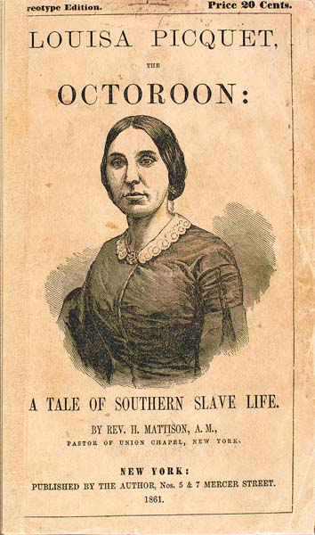

LOUISA PICQUET, the subject of the following narrative, was born in Columbia, South Carolina, and is apparently about thirty-three years of age. She is a little above the medium height, easy and graceful in her manners, of fair complexion and rosy cheeks, with dark eyes, a flowing head of hair with no perceptible inclination to curl, and every appearance, at first view, of an accomplished white lady. The cut on the outside title-page is a tolerable representation of the features of Mrs. P., though by no means a flattering picture.

No one, not apprised of the fact, would suspect that she had a drop of African blood in her veins; indeed, few will believe it, at first, even when told of it.
But a few minutes' conversation with her will convince almost any one that she has, at least, spent most of her life in the South. A certain menial-like diffidence, her plantation expression and pronunciation, her inability to read or write, together with her familiarity with and readiness in describing plantation scenes and sorrows, all attest the truthfulness of her declaration that she has been most of her life a slave. Besides, her artless simplicity and sincerity are sufficient to dissipate the last doubt. No candid person can talk with her without becoming fully convinced that she is a truthful, conscientious, and Christian woman. She is now, and has been for the last eight years, a member of the Zion Baptist Church in Cincinnati, Ohio, of which Rev. Wallace Shelton is now (May, 1860) the pastor.
But, notwithstanding the fair complexion and lady-like bearing of Mrs. Picquet, she is of African descent on her mother's side--an octoroon, or eighth blood--and, consequently, one of the four millions in this land of Bibles, and churches, and ministers, and "liberty," who "have no rights that white men are bound to respect."
The story of her wrongs and sorrows will be recited, to a large extent, in her own language, as taken from her lips by the writer, in Buffalo, N. Y., in May, 1860.
"I WAS born in Columbia, South Carolina. My mother's name was Elizabeth. She was a slave owned by John Randolph,1 and was a seamstress in his family. She was fifteen years old when I was born. Mother's mistress had a child only two weeks older than me. Mother's master, Mr. Randolph, was my father. So mother told me. She was forbid to tell who was my father, but I looked so much like Madame Randolph's baby that she got dissatisfied, and mother had to be sold. Then mother and me was sent to Georgia, and sold. I was a baby--don't remember at all, but suppose I was about two months old, may be older."
"THEN I was sold to Georgia, Mr. Cook bought mother and me. When mother first went to Georgia she was a nurse, and suckled Madame Cook's child, with me. Afterward, she was a cook. I was a nurse. I always had plenty to do. Fast as one child would be walkin', then I would have another one to nurse."
Question (by the writer).--"Did your master ever whip you?"
Answer.--"Oh, very often; sometimes he would be drunk, and real funny, and would not whip me then. He had two or three kinds of drunks. Sometimes he would begin to fight at the front door, and fight every thing he come to. At other times he would be real funny."
Q.--"He was a planter, was he?"
A.--"Yes; he had a large cotton plantation, and warehouse where he kept all the cotton in, and stores up the country, in a little town--Monticello--and then he had some in Georgia. He used to give such big parties, and every thing, that he broke up. Then his creditors came, you know, and took all the property; and then he run off with my mother and me, and five other slaves, to Mobile, and hired us all out. He was goin' to have enough to wait on him, for he could not wait on his self. I was hired out to Mr. English. He was a real good man; I wouldn't care if I belonged to him, if I had to belong to any body. I'd like to swap Mr. Cook for him. Mr. English and his wife were very clever to me. They never whipped me. Mother had a little baby sister when we first went to Mobile--a little girl just running round. She died in Alabama. She had one before that, while she was in Georgia; but they all died but me and my brother, the oldest and the youngest."
Q.--"Had she any one she called her husband while she was in Georgia?"
A.--"No."
Q.--"Had she in Mobile?"
A.--"No."
Q.--"Had she any children while she lived in Mobile?"
A.--"None but my brother, the baby when we were all sold."
Q.--"Who was the father of your brother, the baby you speak of?"
A.--"I don't know, except Mr. Cook was. Mother had three children while Mr. Cook owned her."
Q.--"Was your mother white?"
A.--"Yes, she pretty white; not white enough for white people. She have long hair, but it was kind a wavy.
Q.--"Were you hired out in Mobile?"
A.--"Yes; with Mr. English."
"WHILE I was living in Mobile, a gentleman there owned a colored man that was more white than I am. He was about my age. He had no beard; just a young man, might have been nineteen or twenty. His master was not married, but had a girl belong to him, a very light girl he bought from Charleston; he bought her for himself, though he kept her boarding out.
"This colored man I spoke of used to drive out when his master's sisters wanted to go out. They often came to Mr. English's with them, and ring the bell. There I met him often at the door before I knew he was colored, and when he found out I was colored, he was always very polite, and say, 'Good morning, miss,' and ask if the ladies was in. Then, after he got acquainted, he used to come and see me Sundays. He wanted me to marry him, and I liked him very well, and would have had him if he had not run off."
Q.--"How came he to run off?"
A.--"You see Mr.--2 kept that girl, but never go where she was; but, whenever he want to see her he send for her to the office. And this young man who wanted me had to go always and tell that girl, and go with her to the office, whenever his master wanted him to.
"Then this man had another waitman, one was perfectly white, and the other jet black; and the black one got jealous of the other one, and thought his master thought more of his other servant, the white one. (He did think more of him.) So the two had a falling out; and, to seek revenge, the dark one told the master he see something which he did not see--that the other one was out walking with this girl. He knew [that is the black one] that his master would whip him [the light one] for that, when he would not whip him for any thing else. That night his master had not sent for her, and, of course, he thought it might be true.
"Then he ask T--about it, and he denied it, but the owner believed it. Then he whipped him awfully, soon as he came to the office that morning; and sent for the girl, and whipped her, and sent her off to New Orleans.
"Then the partner of this man, he spoke to T--afterward, and told him he would go away. He was an Englishman, or Scotchman. He came out that way--was not raised there. He never would own a slave. He felt sorry that T--was whipped so, and told him he would go away. His first excuse was he had no money, and the next was on account of being acquainted with me. Then the man inquire what kind of looking girl I was, and told him if I was white as he represented there would be no difficulty at all about getting away, and he would let him have money for both of us to go away.
Then he told me what this gentleman said to him, and that he had the money from this gentleman, and wanted me to go way with him. Well, I knew that he could neither read nor write, and was afraid that we would be caught, and so I dare not go. We had about two hours' talk then, but when he found out I would not go, he said he must go; he had the money, and all his arrangements made. That's the last I saw of him. I suppose T--left that night. 'Twas not very long after that I went to Mr. Bachelor's to live, and we were all sold."
We shall hear of this fugitive T--again, further on in our narrative.
Q.--"DID Mr. Cook always treat you well, as to any insults?"
A.--"No. After we went to Mobile, I went to Mr. Bachelor's, after I was at Mr. English's, and Mr. Cook was boarding there. I was a little girl, not fourteen years old. One day Mr. Cook told me I must come to his room that night, and take care of him. He said he was sick, and he want me and another slave girl to come to his room and take care of him. In the afternoon he went to his room, and said he was sick. I was afraid to go there that night, and I told Mrs. Bachelor what Mr. Cook said to me. Then she whispered with her sister, Mrs. Simpson, and then told me I need not go. She said she would go up and see Mr. Cook, and have some one else go and take care of him. Then I went up after Mrs. Bachelor, not to let him see me, and listen to the door. Mrs. Bachelor went in and ask him how he done. She said, `I heard you was sick, and thought I would come up and see if there was any thing serious. He groaned, and seemed to get worse than ever--told how bad he felt about his head, and one thing an'other. Then her reply was, that she would have some water put on to bathe his feet and some mustard, and have one of the boys come up and take care of him. She went right on in that way, without his asking, and smooth it off in that way, so as not to let on that she thought any thing, at the same time clearing me.
"Then he thanked her very kindly. So she went down, and had the water sent up. Then, pretty soon, he sent down by the boy, to tell me to bring up some more mustard. Then Mr. Bachelor, she understood it, and she took up the mustard herself. Then the boy stay with him all night, and just about daylight he come down. When he come down he come to the room (you see, I slept in Mrs. Bachelor's room)--he call me and says, 'Your massa, Henry, says you must take him up a fresh pitcher of water;' and Mrs. Bachelor told him to go and take it up himself; that I was busy.
Q.--"Were you hired to Mrs. Bachelor then?"
A.--"I don't know. I was workin' there; it might have been in part for his board, for aught I know. Mrs. Bachelor kept boarding-house. She was Scotch; came from Scotland."
Q.--"Well, what happened next?"
A.--"I didn't go up till breakfast-time. At breakfast-time I had to take his breakfast up to his room, on a waiter. He had not got up yet--I take the waiter up to the bed. Well, him thinking that all the boarders gone down, talk rather louder than he would if he'd a thought they were there. The door was open wide enough for a person to come in.
"Then he order me, in a sort of commanding way (I don't want to tell what he said), and told me to shut the door. At the same time he was kind a raising up out of the bed; then I began to cry; but before I had time to shut the door, a gentleman walk out of another room close by, picking his nails, and looking in the room as he passed on. Then Mr. Cook turned it off very cute. He said, 'What you stand there crying for, you dam' fool? Go 'long down stairs, and get me some more salt.' Same time he had not taste his breakfast, to see whether he want any salt, or not. That was to blind with that gentleman, because he see me there crying, or heard me, or something. Then I was very glad to get out to get the salt, but still I knew I should have to come back again, and it would not be much better. Then I went down to get the salt, and Mrs. Bachelor caught my looks, and spoke and said, 'Louisa, one of the boys will take that salt up, I want you a minute.' Then I thought she was the best friend I had in the world. She had such a nice way of turning off things. Then I didn't go up till that day, some time. He did not come down, but call out of the window for me to bring him up a pitcher of water. Then I brought the water up, and he want to know why I did not come up with the salt. I told him the reason, that Mrs. Bachelor said she wanted me, and sent it up by one of the boys. Then he said he wanted me to understand that I belong to him, and not to Mrs. Bachelor--that when he called, or wanted me, I was not to consult with Mrs. Bachelor, or any person else.
"Then he told me I must come up in his room that night; if
I didn't he'd give me hell in the mornin'. Then I promised him I would, for I was afraid to say any thing else. Then he forbid me sayin' any thing to Mrs. Bachelor about what he said to me--you see there where he got me. Then I came to conclusion he could not do any thing but whip me--he could not kill me for it; an' I made up my mind to take the whippin'. So I didn't go that night.
"Then in the mornin' he want to know why I didn't come up, and I told him I forget it. Then he said, I don't believe you forgot it; but if you forget that, I won't forget what I told you. So he whip me, so that I won't forget another time.
Q.--"Well, how did he whip you?"
A.--"With the cowhide."
Q.--"Around your shoulders, or how?"
A.--"That day he did."
Q.--"How were you dressed--with thin clothes, or how?"
A.--"Oh, very thin; with low-neck'd dress. In the summer-time we never wore but two pieces--only the one under, and the blue homespun over. It is a striped cloth they make in Georgia just for the colored people. All the time he was whippin' me I kept sayin' I forgot it, and promisin' I would come another time."
Q.--"Did he whip you hard, so as to raise marks?"
A.--"Oh yes. He never whip me in his life but what he leave the mark on, I was dressed so thin. He kept asking me, all the time he was whippin' me, if I intended to mind him. Of course I told him I would, because I was gettin' a whippin. At the same time, I did not mean to go to his room; but only did it so that he would stop whippin' me. He want to know what I was afraid of--if I could not sleep as well there as any where else? Of course I told him, yes, sir; and that I wan't afraid of any thing. At the same time, I was afraid of him but I wouldn't tell him. Then he let me go. Then, as luck would have it, he got playin' cards with some gentlemen after dinner, about two or three o'clock, and never stop all night; so I thought from appearance of things in the mornin'. They were playin' and drinkin' together all night; so I did not go to his room till mornin'. I had my excuse all made up--
because he had company, and I was waitin', and got to sleep. At the same time I didn't intend, and expect to take another whippin' in the mornin'.
"Then, in the mornin', I went up to call him to breakfast; and, as I knock at the door to call him, to tell him that breakfast was ready, he told me to come in. He came to the door, and I smelt his breath, and see from the way he spoke to me that he had been drinkin'. He told me to come in, that he had somethin' for me. At the same time, he took hold of my hand, and kind a pull me, and put a whole handful of half-dollars in my hand. Then I knew he was drunk, but it surprise me so that I didn't know what to think. At the same time, he was holdin' on to me, and askin' me if I would come back. I told him, yes. But I thought he was so drunk he would forget, and so I have all that money. I never had any money but copper and five cents before; and, of course, my hand full of half-dollars looked to me like a fortune. I thought he had got it that night playin' cards. I went on, then, down stairs; and in the afternoon, when he got a little sober, he ask me what I done with that money. First I ask him, what money? I thought he would forget it, and didn't let on that I knew any thing about it. Then he said, that money I let you have this mornin'. Then I knew he had not forgot.
"Then, you see, I had seen a flowered muslin dress in the store several times, and I take a fancy to it; I thought it look beautiful. It was perfectly white, with a little pink leaf all over it. So I went to the store, and ask the man what's the price of it. Then he told me, but I could not reckon it, so I lay the money out, and told him to give just as many yards as I had half-dollars. Then he told me that would be too large a pattern for me; but I told him, no, I wanted a nice full dress. That was the largest pattern I ever had afore, or since. Then I told Mr. Cook I put the money away, and could not find it. I had sense enough to know he would not dare tell any one that he gave me the money, and would hardly dare to whip me for it. Then he say no more about it, only he told me to come up there that night. He said he want to see some more about that money; he didn't believe I lost it. Then I told Mrs. Bachelor
that I guess I'd have to go up stairs that night; and ask her what I should do. She was the best friend I had; but she could not interfere no more, because if she did he'd know that I told her. Then she said she had no patience with him--he was the meanest man she ever saw. She abused him then a great deal, before her sister and before me. Then she said the best plan would be to keep out of his way, and if he called me, not to answer. I was to keep in her room that evening as much as possible.
"Well, about tea-time he wanted water. That was sent up. Then he wanted to know where I was; he wanted a button sewed on his wristband. Then Mrs. Bachelor sent him word that, if he could not find me, to send the shirt down, and her sister, or one of the girls, would put a button on for him, if he was in a hurry. The shirt came down, and the button was sewed on. I suppose he just took the button off for an excuse. Then, when they went up with the shirt, he sent word down that, when I came, I must come up and get his boots and black them. He did not care about waitin' so long for them in the mornin'. He thought I'd give out somewhere. Then, about bedtime, he call one of the boys to know if they told me about the boots; and they said they hadn't seen me. I was all the time in Mrs. Bachelor's room, but none of them knew it. I sewed the button on, but he didn't know it. Then he pretended to be mad because I was gone out at night, and she excuse me, and said, perhaps I had gone out with some children, and got to playin', and didn't know it was so late. He was mad and told her his wife never allowed me to go out nights, and she must not; and allowed he would give me a floggin' for it. He said I knew better than to go out. He thought I was out or, perhaps, he thought it was a trick to keep me from him, and that made him so mad.
"In the mornin' he came down, and want to know where was. You see, I'd made up my mind to take the whippin'. I knew he would not kill me, and I'd get over it the same as had before. So I told him I was down stairs asleep.
"Then he came to me in the ironin'-room, down stairs, where I was, and whip me with the cowhide, naked, so I 'spect I'll
take some of the marks with me to the grave. One of them I know I will." [Here Mrs. P. declines explaining further how he whipped her, though she had told our hostess where this was written; but it is too horrible and indelicate to be read in a civilized country.] Mrs. P. then proceeds, "He was very mad, and whipped me awfully. That was the worst whippin' I ever had."
Q--"Did he cut through your skin?"
A.--"Oh yes; in a good many places. I don't believe he could whip me much worse, if I struck his wife or children; and I didn't do any thing. He pretended it was because I was out, but I knew what it was for. When he came out of the room, after he had whipped me, he said, to make Mrs. Bachelor believe, 'I'll be bound she won't go out another time without permission.' Then, when he was whippin' me so awfully, I made up my mind 'twas of no use, and I'd go, and not be whipped any more; and told him so. I saw he was bent on it, and I could not get Mrs. Bachelor to protect me any more. Then he went away, and that was the last I ever saw him. That very day, about noon, we was taken by the sheriff, and was all sold the next mornin'. I tell you I was glad when I heard I was taken off to be sold, because of what I escape; but I jump out of the fryin'-pan into the fire. Mrs. Bachelor said it was a good thing, when I went away."
Q.--"Where was Mrs. Cook all this time?"
A--"She was up the country, in Georgia, with a sister of hers. When he failed in Georgia, he sent her up to her sister. I suppose she was willing to do it; she must have understood it."
Q.--"How many children had she?"
A.--"I could not tell; they had a lot of them. I know I been nursin' all my life up to that time."
Q.--"How did you say you come to be sold?"
A.--"Well, you see, Mr. Cook made great parties, and go off to watering-places, and get in debt, and had to break up [fail], and then he took us to Mobile, and hired the most of us out, so the men he owe should not find us, and sell us for the debt. Then, after a while, the sheriff came from Georgia after Mr. Cook's debts, and found us all, and took us to auction, and sold us. My mother and brother was sold to Texas, and I was sold to New Orleans."
Q.--"How old were you, then?"
A.--"Well, I don't know exactly, but the auctioneer said I wasn't quite fourteen. I didn't know myself."
Q.--"How old was your brother?"
A.--"I suppose he was about two months old. He was little bit of baby."
Q.--"Where were you sold?"
A.--"In the city of Mobile."
Q.--"In a yard? In the city?"
A.--"No. They put all the men in one room, and all the women in another; and then whoever want to buy come and examine, and ask you whole lot of questions. They began to take the clothes off of me, and a gentleman said they needn't do that, and told them to take me out. He said he knew I was a virtuous girl, and he'd buy me, anyhow. He didn't strip me only just under my shoulders."
Q--"Were there any others there white like you?"
A.--"Oh yes, plenty of them. There was only Lucy of our lot, but others!"
Q.--"Were others stripped and examined?"
A.--"Well, not quite naked, but just same."
Q.--"You say the gentleman told them to 'take you out.' What did he mean by that?"
A.--"Why, take me out of the room where the women and girls were kept; where they examine them--out where the auctioneer sold us."
Q.--"Where was that? In the street, or in a yard?"
A.--"At the market, where the block is?"
Q.--"What block?"
A.--"My! don't you know? The stand, where we have to get up?"
Q.--"Did you get up on the stand?"
A.--"Why, of course; we all have to get up to be seen."
Q.--"What else do you remember about it?"
A.--"Well, they first begin at upward of six hundred for me, and then some bid fifty more, and some twenty-five more, and that way."
Q.--"Do you remember any thing the auctioneer said about you when he sold you?"
A.--"Well, he said he could not recommend me for any thing else only that I was a good-lookin' girl, and a good nurse, and kind and affectionate to children; but I was never used to any hard work. He told them they could see that. My hair was quite short, and the auctioneer spoke about it, but said, `You see it good quality, and give it a little time, it will grew out again. You see Mr. Cook had my hair cut off. My hair grew fast, and look so much better than Mr. Cook's daughter, and he fancy I had better hair than his daughter, and so he had it cut off to make a difference."
Q.--"Well, how did they sell you and your mother? that is, which was sold first?"
A.--"Mother was put up the first of our folks. She was sold for splendid cook, and Mr. Horton, from Texas, bought her and the baby, my brother. Then Henry, the carriage-driver, was put up, and Mr. Horton bought him, and then two field-hands, Jim and Mary. The women there tend mills and drive ox wagons, and plough, just like men. Then I was sold next. Mr. Horton run me up to fourteen hundred dollars. He wanted I should go with my mother. Then some one said 'fifty.' Then Mr. Williams allowed that he did not care what they bid, he was going to have me anyhow. Then he bid fifteen hundred.
Mr. Horton said 'twas no use to bid any more, and I was sold to Mr. Williams. I went right to New Orleans then."
Q.--"Who was Mr. Williams?"
A.--"I didn't know then, only he lived in New Orleans. Him and his wife had parted, some way--he had three children boys. When I was going away I heard some one cryin', and prayin' the Lord to go with her only daughter, and protect me. I felt pretty bad then, but hadn't no time only to say good-bye. I wanted to go back and get the dress I bought with the half-dollars, I thought a good deal of that; but Mr. Williams would not let me go back and get it. He said he'd get me plenty of nice dresses. Then I thought mother could cut it up and make dresses for my brother, the baby. I knew she could not wear it; and I had a thought, too, that she'd have it to remember me."
Q.--"It seems like a dream, don't it?"
A.--"No; it seems fresh in my memory when I think of it--no longer than yesterday. Mother was right on her knees, with her hands up, prayin' to the Lord for me. She didn't care who saw her: the people all lookin' at her. I often thought her prayers followed me, for I never could forget her. Whenever I wanted any thing real bad after that, my mother was always sure to appear to me in a dream that night, and have plenty to give me, always."
Q.--"Have you never seen her since?"
A.--"No, never since that time. I went to New Orleans, and she went to Texas. So I understood."
Q.--"Well, how was it with you after Mr. Williams bought you?"
A.--"Well, he took me right away to New Orleans."
Q.--"How did you go?"
A.--"In a boat, down the river. Mr. Williams told me what he bought me for, soon as we started for New Orleans. He said he was getting old, and when he saw me he thought he'd buy me, and end his days with me. He said if I behave myself he'd treat me well: but, if not, he'd whip me almost to death."
Q.--"How old was he?"
A.--"He was over forty; I guess pretty near fifty. He was gray headed. That's the reason he was always so jealous. He never let me go out anywhere."
Q.--"Did you never go to church?"
A.--"No, sir; I never darken a church door from the time he bought me till after he died. I used to ask him to let me go to church. He would accuse me of some object, and said there was more rascality done there than anywhere else. He'd sometimes say, 'Go on, I guess you've made your arrangements; go on, I'll catch up with you.' But I never dare go once."
Q.--"Had you any children while in New Orleans?"
A.--"Yes; I had four."
Q.--"Who was their father?"
A.--"Mr. Williams."
Q.--"Was it known that he was living with you?"
A.--"Every body knew I was housekeeper, but he never let on that he was the father of my children. I did all the work in his house--nobody there but me and the children."
Q.--"What children?"
A.--"My children and his. You see he had three sons."
Q.--"How old were his children when you went there?"
A.--"I guess the youngest was nine years old. When he had company, gentlemen folks, he took them to the hotel. He never have no gentlemen company home. Sometimes he would come and knock, if he stay out later than usual time; and if I did not let him in in a minute, when I would be asleep, he'd come in and take the light, and look under the bed, and in the wardrobe, and all over, and then ask me why I did not let him in sooner. I did not know what it meant till I learnt his ways."
Q.--"Were your children mulattoes?"
A.--"No, sir! They were all white. They look just like him. The neighbors all see that. After a while he got so disagreeable that I told him, one day, I wished he would sell me, or 'put me in his pocket'--that's the way we say--because I had no peace at all. I rather die than live in that way. Then he got awful mad, and said nothin' but death should separate
us; and, if I run off, he'd blow my brains out. Then I thought, if that be the way, all I could do was just to pray for him to die."
Q.--"Where did you learn to pray?"
A.--"I first begin to pray when I was in Georgia, about whippin'--that the Lord would make them forget it, and not whip me: and it seems if when I pray I did not get so hard whippin'."
Q.--"DID you feel that you were doing right in living, as you did, with Mr. Williams?"
A.--"No; when I was a little girl in Georgia the madame, Mrs. Cook, used to read the Bible, and explain it to us. One night she read the commandments about stealin', and committin' adultery. They made a great impression on my mind. I knew what stealin' was, but I did not know what adultery was. Then I asked her the meanin'. She did not want to answer for a good while. I suppose I was so small she hated to tell me, but I kept on askin'. Then she said, 'You see Lucy, how many children she's got?' I told her yes. Then she said she did not know the father of any of them children, and said when folks had children that way they must be married like she (Mrs. Cook) was to her husband. It was adultery to stay with any one without bein' married--that was the, meanin' of it."
Q.--"Who was this Lucy?"
A.--"She was a seamstress in Mrs. Cook's family."
Q.--"What was her color?"
A.--"Right white--light hair and blue eyes. All her children were right white."
Q.--"And was she a slave?"
A.--"Yes, sir."
Q.--"How many children had she?"
A.--"Five or six in Georgia, and one after she went to Mobile."
Q.--"And had she no husband?"
A.--"No, sir; never had a husband in her life."
Q.--"Do not the slave women usually have husbands, or those they call their husbands?"
A.--"Yes, sir; some of them do; but some of them do not. They can't have any husbands, because their masters have them all the time."
Q.--"How did you say it was with Lucy?"
A.--"She sew in the house all day, and then go to her room, off, at night."
Q.--"What became of her?"
A.--"Well, she was sold the day I was, in Mobile, and got free after a while; and each of the white men bought his child. Mr. Moore bought his, and Mr. Hale bought his; and then the others, that their fathers would not own, her relations bought and set free."
Q.--"Who do you mean by her relations?"
A.--"Why Lucy's sister Judy, and Mr.-- 3 , who kept her. I tell you how he did: He bought Eley, Lucy's sister, first, and lived with her till she died. He had her learn to read and write, and taught her music, and done first rate by her. Then, when Eley died, he bought her sister, Judy, and is livin' with her yet. Then, when they heard that Lucy was sold, all her sisters and brothers unite, sent on and bought her, and set her free."
Q.--"WELL, now tell me about your life in New Orleans."
A.--"Well, when Mr. Williams bought me he told me where I was goin', to New Orleans, and what he bought me for. Then I thought of what Mrs. Cook told me; and I thought, now I shall be committin' adultery, and there's no chance for me, and I'll have to die and be lost. Then I had this trouble with him and my soul the whole time."
Q.--"Did you ever say any thing to him about this trouble?"
A.--"Yes, sir; I told him often. Then he would dam' at it. He said he had all that to answer for himself. If I was only true to him, then I could get religion--that needn't hinder me from gettin' religion. But I knew better than that. I thought it was of no use to be prayin', and livin' in sin
"I begin the, to pray that he might die, so that I might get religion; and then I promise the Lord one night, faithful, in prayer, if he would just take him out of the way, I'd get religion and be true to Him as long as I lived. If Mr. Williams only knew that, and get up out of his grave, he'd beat me half to death. Then it was some time before he got sick. Then, when he did get sick, he was sick nearly a year. Then he begin to get good, and talked kind to me. I could see there was a change in him. He was not all the time accusin' me of other people. Then, when I saw that he was sufferin' so, I begin to get sorry, and begin to pray that he might get religion first be fore he died. I felt sorry to see him die in his sins. I pray for him to have religion, when I did not have it myself. I thought if he got religion and then died, I knew that I could get religion.
"It seems he did get religion, because he was so much changed in his way; but he said he wanted to see his way clearer."
Q.--"Was he rich?"
A.--"Oh no, sir. He had to borrow some of the money of his brother to buy me."
Q.--"What kind of a house did you live in?"
A.--"Why, it was a rented house. When he got up, one mornin', I got him up in a chair by the fire--it was cold weather--then he told me he was goin' to die, and that he could not live; and he said that if I would promise him that I would go to New York, he would leave me and the children free. He was then writin' to a table--had a little table to the side of him. Then he told me how to conduct myself, and not to live as I had lived with him, with any person. He told me to come out this way (North), and not to let any one know who I was, or that I was colored. He said no person would know it, if I didn't tell it; and, if I conducted myself right, some one would want to marry me, but warned me not to marry any one but a mechanic--some one who had trade, and was able to take care of me and the children."
Q.--"How many children had you then?"
A.--"Only two. I had four, but two had died. Then I promised him to go to New York. Then he said, just as soon as he died I must go right to New York; and he said he would leave me the things. He hadn't any thing to leave me but the things."
Q.--"What things?"
A.--"The things in the house--the beds, and tables, and such things."
"THEN, in about a month or three weeks, he died. I didn't cry nor nothin', for I was glad he was dead; for I thought I could have some peace and happiness then. I was left free, and that made me so glad I could hardly believe it myself.
"Then, on Sunday, I dressed myself and went out to go to
church; and that was the first time I had been to church in six years. I used to go to the colored church in Georgia, with my mother, in the afternoon. When I got there, to the church in New Orleans, the minister talked just as though he knew all about me, and talked about the vows I had made to the Lord about my husband. Then I said in my mind, he wan't my husband; but then I determined to go there to church. Then I asked the people what church it was, and they said, a Methodist church. Then Mr. Williams' brother came, and told me I must go out of that house, because he would not pay the rent. Then a woman there, a friend of mine, let me come in one of her rooms. She was very kind to me, and used to give me victuals when I did not know where to get it."
Q.--"Who was this woman?"
A.--"Her name was Helen Hopkins; she was a colored woman that used to take in washing. I never knew how it was that she was so kind to me. I always thought it was the Lord takin' care of the widow and the fatherless.
"One day I met Mr. Williams' brother, and he asked me what I was doin'; and I told him, nothin'. He said that by rights I belonged to him, because his brother had not paid him the money that he borrowed to help buy me. Mr. Williams--John Williams--had said before that he would give me somethin' for the children. Then he asked me why I did not go away, as his brother told me. Then I told him it was because I had not money enough to go with, and asked him to give me some. Then he said I had better thank God for my freedom; and that his brother had got enough from him. Then I told this friend of mine, who had given me victuals, and she advised me to get away as soon as I could.
"Then Mr. John Williams sent the things I had to a secondhand furniture store, and sold them all; and I took the money and my two children, and went to Cincinnati. I had just money enough to get there, and a little bit over."
Q.--"What made you stop at Cincinnati?"
A.--"Because I had no money to go further; and I met all my friends there that I knew, when I was small, in Georgia. One of them was a Mrs. Nelson. who was once a slave in Georgia
with my mother. Her husband had bought her, and she was livin' with him in Cincinnati. I went right to her house. Then, when I saw her free, and was free myself, I began to think more about my mother."
Q.--"When had you seen your mother last?"
A.--"At the auction, where we were all sold. It is now most twenty years ago."
Q.--"Had you never heard from her?"
A.--"Yes. I had one letter from her when I was in New Orleans. Mr. Williams read the letter to me, and told me that my mother wanted me to send her some tea and sugar. That was just like the mornin' we parted. It grieved me so to think that she was where she could have no sugar and tea. She could always get it in Georgia, if she had to take in workin' and do it at night. But I had no money, and could not send her any thing; and I felt bad to think my mother could not have any of these things. Whenever I set down to eat ever since, I always think of my mother. When Mr. Williams was sick, before he died, he promised me, if he ever got up off from that bed, he would buy my mother, and set us all free. But he never did it."
Q.--"Are the two children you brought with you from New Orleans now living?"
A.--"No; one of them died soon after I got to Cincinnati. I have only one of them livin'--a daughter, about eighteen years old."
Q.--"Is she as white as you are?"
A.--"Oh yes; a great deal whiter."
Q.--"HAVE you any other children?"
A.--"Yes; three others. I been in Cincinnati near twelve years. Three years after I came there, I married Mr. Picquet, my husband."
Q.--"Is he a white man or colored?"
A.--"He's a mulatto. His mother is brown skin, and his father white, and that makes a mulatto, you know."
Q.--"Who was his father?"
A.--"He was a Frenchman, in Georgia. He bought my husband's mother, and live with her public. I knew all about it there, before I left Georgia. She had four other children beside my husband."
Q.--"Were they all slaves?"
A.--"Yes. They all belong to Mr. Picquet, but he never uses them as slaves. They are his children."
Q.--"How did they get free?"
A.--"Why, when he got married, he sent them all to Cincinnati, the mother and five children. It would be unpleasant for them all to stay there together (i.e., his wife, and concubine and her children)."
Q.--"Had your husband ever been married before?"
A.--"Yes; he married a slave-woman there."
Q.--"How do the slaves get married?"
A.--"In a general way they ask the owners, and the owner says yes; and they get married."
Q.--"Do they have a minister to marry them out on the plantations?"
A.--"No; not one out of three plantations. They ask the master, and then have little bit of frolic, and sometimes they don't have that."
Q.--"How was it with Henry, your husband?"
A.--"Why, he hired Eliza, and rented a house, and put her in. She was a slave-woman, and took in washin'."
Q.--"How came they to part?"
A.--"Why, you see, she belong to heirs, and the property
was sold for the money to be divided. Then a gentleman in Macon bought Eliza for himself. Then Henry felt so bad about it that, pretty soon, he went to see her. He went there with the intention of buyin' her and her baby, which was Henry's. Mr. Picquet, Henry's father, was goin' to let him have the money. So, when he got there, he found it different from what he expected. He found he could not have her any more for his wife. You see, the gentleman had bought her for himself. So my husband writ to his father that he could not get his wife, but he could buy the child. Then his father, Mr. Picquet, sent on the money, and he bought the child, and brought it away. It was about three months old, and he raised it on a bottle, work all day, and then worry with the child all night."
Q.--"Is that child yet living?"
A.--"Oh yes; she is livin' with us in Cincinnati, and the smartest one we got too. She is about thirteen or fourteen."
Q.--"Is she as white as your children?"
A.--"Oh no; she is the darkest one in the house. But her hair is straight, only little bit wavy."
Q.--"How came you to find out where your mother was?"
A.--"Well, I hear she was in Texas, and I keep writin' to Texas, and supposed it was one place, but never got no answer. But I kept prayin', and always believed that I should see her or hear from her, before I died."
Q.--"You kept up praying all this time, did you?"
A.--"Yes; but when I came to Cincinnati, I thought more about my mother--to think I was free, and so many others that I knew in Georgia, and she was still in slavery! It was a great weight on my mind; and I thought if I could get religion I should certainly meet her in heaven for I knew she was
a Christian woman. I had thought of it very often, and thought how often I had told the Lord I would serve him and had not done so, till I was almost afraid to make another promise. Then I made up my mind to serve the Lord. I had often been to the Methodist meeting there, when there was great excitement; but I never went up to be prayed for. I thought it was a sin if I did not go up in the right way.
"But I kept feelin' worse in my mind. Every thing I had ever done all came up before me. I felt as if I could not look up; my eyes were fixed on the ground. In the evenin'--Sunday evenin'--I went to meetin' in the Zion Baptist Church. Mr. Shelton was preachin'. After he got through, they was singin'; I felt troubled all through it. Then I went up to the altar with others. I made up my mind that I would never hold up my head again on this earth till the Lord converted me. I prayed hard enough that night. My husband was so mortified to think I prayed so loud, and made so much noise; but I told him, Henry, I have to die for myself, and it did not set me back at all. But I did not get rid of the burden I felt till near daylight that night, or next mornin'. I was prayin' nearly all night, and near mornin' I felt worse, as if I would die; and I tried to wake Henry up, but I could not wake him at all. It seemed as if I had not time. All my long prayers had gone to just the one word, 'Lord, have mercy!' and I could not say any thing but that. And the moment I believe that the Lord would relieve me, the burden went right off; and I felt as light as if I was right up in the air. And it seemed as if there was light in the room. Then, the next Sunday, I joined the church, and the Sunday after was baptized. That was eight years ago, going on nine. I been in that church ever since."
Q.--"Is your husband a professor of religion?"
A.--"Yes; he belongs to the same church. He experienced religion in Georgia."
Q.--"How about the two daughters?"
A.--"Elizabeth, my daughter, belongs to the same church. My husband's daughter, Harriet, does not belong to any church."
Q.--"Does your church commune with slaveholders?"
A.--"No, sir; they will not. The Union Baptist Church does. When white ministers come there from the South, they let them break the bread at the Communion; but in our church, if they come there, they don't do it, unless they come with a lie in their mouth. They ask them if they believe in slavery, or apologize for it, and if they do, then they don't preach there. No slave-holder, or apologist for slavery, can preach in that church; that was the foundation when they first started."
Q.--"Well, how did you find out where your mother was?"
A.--"Well, I have made it a business for about eleven years, to inquire of every one I saw, almost, about my mother. If any fugitives came through, I made it my business to get to see them, and inquire. A great many fugitives come through Cincinnati. I have had lots of them in my house.
"One time a colored woman came there, real genteel, and ask to board. I thought she was a runaway slave, though she tried to make me believe she was free. Her name was Mary White. She was there two or three weeks, and I notice she never went out only on Sunday evenin's. One afternoon she went to our church, and heard it give out by the preacher, that if any of the friends knew of a woman by the name of Mary White, to tell her to be on the look-out, for the hell-hounds were after her up to one of the hotels. Then she spring up, and came to where I was and told me. That night we darken up the house, and a Quaker friend came there and had her fixed up; and next day she was on her way to Canada. After that I got a couple of letters from her, returning thanks to us all for helpin' her on her way. She was in a sheriff's family in Canada, and was doing well."
Q.--"Now tell me how you found your mother?"
A.--"I used to take in washin', and one day a gentleman, Mr. B., a good friend of ours in Cincinnati, sent some shirts there to be done up, and said he was goin' to Texas. Then my husband inquired, and found out that he knew Mr. Horton, in Texas, and told us what kind of a lookin' man he was. Then I remembered how he looked when he bought my mother in Mobile, and I knew it was the same man. Then he told us
how to send a letter, and where to mail it. [There is a kink about mailing a letter, so as to have it reach a slave, that we never before dreamed of; but Mrs. P. does not wish it published, for fear it will hinder her from getting her letters.] Then I wrote a letter [got one written], and in three weeks I had a letter from my mother."
Q.--"What became of the first letter you had from your mother, while you were in New Orleans?"
A.--"I never saw that. Mr. Williams only told me he got it, and what was in it. I only knew she was in Texas. I thought it was all Texas."
Q.--"Have you the first letter you received from your mother?"
A.--"Yes; up stairs. Shall I go and get it?"
Here the letter was brought. It is on a tough blue paper, well soiled and worn, but yet quite legible. The following chapter contains an exact copy.
WHARTON, March 8, 1859
MY DEAR DAUGHTER,
I a gane take my pen in hand to drop you a few lines.
I have written to you twice, but I hav not yet received an answer from you I can not imagin why you do not writ I feel very much troubel I fear you hav not recived my letters or you would hav written; I sent to my little grand children a ring also a button in my first letter I want you to writ to me on recept of this letter, whether you hav ever received the letters and presents or not I said in my letter to you that Col. Horton would let you have me for 1000 dol. or a woman that could fill my place; I think you could get one cheaper where you are4 that would fill my place than to pay him the money; I am anxios to hav you to make this trade. you hav no Idea what my feelings are. I hav not spent one happy moment since I received your kind letter. it is true I was more than rejoyest to hear from you my Dear child; but my feelings on this subject are in Expressible. no one but a mother can tell my feelings. in regard to your Brother John Col. Horton is willing for you to hav him for a boy a fifteen years old or fifteen hundred dol I think that 1000 dollars is too much for me you must writ very kind to Col Horton and try to Get me for less money; I think you can change his Price by writing Kindly to him aske him in a kind manner to let you hav me for less I think you can soften his heart and he will let you hav me for less than he has offered me to you for.
you Brother John sends his love to you and 100 kisses to your little son; Kiss my Dear little children 100 times for me particuler Elizabeth say to her that she must writ to her grand mar ofton; I want you to hav your ambrotipe taken also your children and send them to me I would giv this world to see you and my sweet little children; may God bless you my Dear child and protect you is my prayer.
Your affectionate mother,
ELIZABETH RAMSEY.
direct your letter to Gov. A. C. Horton Wharton Wharton contey texas.
The reader will understand that the brother John, mentioned in this letter, was the "baby" sold with the mother some twenty years ago, in Mobile, whose slips were made of Louisa's pink dress bought with the half-dollars. Louisa's mother never would take the name of Randolph or Cook--the name of her owner--as other slaves do, so she still sticks to her first name of Ramsey, as when she lived in South Carolina thirty-five years ago.
This letter is dated at Wharton. Mrs. P. says it is "in the country, where they go in the winter, and live at Matagorda in the summer." By looking upon a map of Texas it may be seen that Matagorda is at the mouth of the Colorado River, on the Gulf of Mexico; and Wharton about forty miles northwest, on the same river, both in Southern Texas.
Another friend. Mrs. Ramsey now lives with Arthur, the coachman, who was sold at the same time with her in Mobile, as her husband. The letter is, of course, written by some white person, and is printed exactly as it is written.
There is a fact worth recording in regard to the first letter that reaches Mrs. Ramsey. It is thus described by Mrs. Picquet:
"I had been tryin' hard to find out where my mother was twelve years, after I came to Cincinnati; and when I get that letter written, I just put my trust in the Lord to go with it. I had tried so long, and could not get no word at all. I prayed to the Lord to go with each seal. There was three envelopes: one to take the letter to my friend at St. Louis, to mail the letter that was in it to Matagorda for me. That letter was directed to the postmaster in Texas; and a letter to him in it, asking him, if Col. Horton was alive, to send it to him, and, if not, to send it to some of his children. And I prayed the Lord that he would work in the hearts of the man in St. Louis, and the postmaster at Matagorda, that my letter might reach my mother.
"In that letter I ask Mr. Horton if he would please to read it to my mother, to let her know that I was yet alive; and, if he did not feel disposed to read it to her, would he be so kind as to drop me a few lines, just to let me know if she was alive; and, if she was dead, how long ago, and how she died; and, if she was livin', if she was well, and how she looked--just to ease my mind, for I had been weighed down with sorrow to see her for many years. I told him I had no silver nor gold to pay him; but I trust the Lord would reward him for his kindness, if he would do that much for me. I told him I had great faith in the Lord; and I would pray that his last days might be his best. I tell him if she was livin', and he would sell
her, I would try to buy her. If I thought she would die the next week, it would be a great comfort for me to have her here to bury her."
Thus it seems that the Lord did go with the letter, and that Mrs. Horton read the letter to Louisa's mother. She then wrote two letters, but they did not reach Mrs. P. One of them, the one containing the button and the ring, was afterward found in the post-office in Matagorda, by Mrs. Ramsey. It was probably either not stamped, or not properly directed.
As soon as Mrs. P. got the first letter from her mother, she wrote two letters back, one to her mother, and the other to Mr. Horton, and both dated and mailed as before. In a short time she received another from her mother, written but a few days after the first received by Mrs. P.; and as it throws some additional light upon the question whether or not slaves have any proper affection for their offspring, we transcribe and print that also.
SECOND LETTER FROM THE SLAVE MOTHER.
WARTON, Warton County, March 13, '59.
MY DEAR DAUGHTER,
"Your very kind and affectionate letters dated at St. Louis, One in January the other in Febuary has been received and contents partickularly notist, I had them read often creating in me both Sorrow and Joy. Joy that you were living & a doing wel so far as the comforts of this world are concerned and you seem to have a bright prospect in the World to come, this the brightest of all other prospects, If a Person should gain the whole world & lose there Soul they have lost all, My Dear Daughter you say a great deal to me about instructing your Brother in his duty, I endeavor to set a good example before him it is all that I can do John is a good disposed Boy & a favorite with his Master, Arthur, Jim & Mary are all members of the Babtist Church, they are all well and a doing well, In your first letter you spoke of trying to purchase me & your Brother, the proposition was made to you to exchang Property of equal value, or to take One Thousand Dollars for
me, & Fifteen Hundred for your Brother this may seem an extravagant price to you but it is not an average price for Servants, I know of nothing on this earth that would gratify me so much as to meet with My Dear & only daughter, I fear that I should not be able to retain my senses on account of the great Joy it would create in me, But time alone will develup whether this meeting will tak plase on earth or not Hope keeps the soul alive, but my Dear Daughter if this should not be our happy lot, I pray God that we may be able to hold fast to the end, & be the Happy recipients of the promise made to the faithful. There will be no parting there, but we shall live in the immediate presence and smiles of our God. It is not in our power to comply with your request in regard to the Degeurrotypes this tim, we shall move to Matagorda shortly, there I can comply with your request. Arthur, Jim, Mary and your brother desire to be very kindly remembered to you, Answer this at as early a date as convenient Direct your letter to Goven A. C. Horton, Matagorda, Texas.
"May God guide and protect you through Life, & Finally save You in Heaven is the prayer of your affectionate mother,
ELIZABETH RAMSEY.
Before this second letter was received Mrs. P. writes to Mr. Horton, reminding him that her mother was growing old, and that it would be better for him to sell her cheaper, and buy a younger person. In answer to this letter the following was received from Mr. Horton himself.
MATAGORDA, June 17, 1859.
LOUISA,
I have your favor of 16th April last, and contents duly noticed.
You seem to think that I ask you too much for your mother.
Money would not induce me to sell her, were it not for existing circumstances. You know that she is as fine a washer, cook, and ironer as there is in the United States. It's true she is getting old, but she carries her age well, and looks as young as she did twenty years ago. I only ask you to place another of her quality and qualifications in her stead. You can not complain of this, if it's not of your power to comply with the terms. I write you to come and see her, and I pledge myself you shall not be molested either directly or indirectly, but protected to the utmost extent.
I send you by this mail a Daguerreotype likeness of your mother and brother, which I hope you will receive. Your mother received yours in a damaged condition. Your mother and all your acquaintance are in fine health, and desire to be remembered, and would be pleased to see you.
Respec'y yours,
A. C. HORTON.
The Daguerreotype mentioned above was duly received, in perfect order, and is now in the hands of Mrs. Picquet. They are both taken on one plate, mother and son, and are set forth in their best possible gear, to impress us in the north with the superior condition of the slave over the free colored people.
Just here might come in a chapter more romantic and thrilling than any thing as yet narrated in this pamphlet, but, for reasons that we must not name, it must remain unprinted for the present. The time may come, and we hope soon will come, when it may be published without prejudice to any party or interest.
From the date of the last of the preceding letters, Mrs. Picquet has received letters from her mother nearly every month, but nothing further from Mr. Horton himself, though Mrs. P. has often written him, importuning him to take less for her mother. At length, in March, 1860, she wrote to Mrs. Horton, appealing to her regard for her own mother, to talk to Col. Horton, her husband, and see if he would take less than one thousand dollars for Mrs. Ramsey. Of the results of this appeal we shall learn hereafter.
MRS. PICQUET'S first plan was to draw her husband's wages two years in advance. He was in the employ of Mr. John Carlisle, of Cincinnati, and was willing to have the fruit of his labor thus taken in advance to restore his mother-in-law to freedom, and to the embrace of her daughter. But how were they to live these two years? The two years' labor would only amount to about five hundred dollars, at most; and how to get the remaining five hundred dollars, and take care of themselves and family at the same time, was the insurmountable difficulty. Mrs. P. was anxious to sell every thing she had to help buy the mother, but all she had on earth would bring but little. For one whole year Mrs. P. saved every penny she could, even denying herself many of the comforts of life; and the amount of all this rigid economy was only sixty dollars saved. By this time she began to be discouraged. She talked with friends, and they advised her to go out and solicit money for the purpose. This she was reluctant to do. She had her family of four young children to care for, as well as her husband; had never traveled, except from New Orleans to Cincinnati, and dreaded to go out for such a purpose. She knew that many were abroad soliciting money for such purposes, and feared it would be in vain for her to make the attempt. But her mother was in bondage, and she resolved to make the attempt at all hazards.
The Press of Cincinnati gave the effort their encouragement The Daily Gazette of Saturday, March 10, contained the following:
TO THE BENEVOLENT OF CINCINNATI.
Louisa Picquet, though to all appearance white, is, nevertheless, a colored woman. She was born a slave, and has a mother and brother now in slavery in Texas. She is personally known to me. She is in our midst, appealing for aid to buy her mother out of slavery. Let our citizens respond to her appeal.
***
JAMES POINDEXTER, of Zion Baptist Church.
This Mr. Poindexter, it seems, was not then in active service, as pastor of the church, though still residing there.
The Journal and Messenger of March 16, contained the following editorial notice:
"Louisa Picquet, formerly a slave, but with a complexion as white almost as that of any person, is now visiting villages in this State [Ohio], soliciting aid to purchase her mother, who is a slave in Texas. She is a member of Zion Baptist Church, in this city, is well recommended; and is, no doubt, worthy of public sympathy and benevolence."
Mrs. P. accordingly procured a subscription-book, pasted the above notices into the front of it, and started out in Cincinnati first. A well-known "Friend," in Cincinnati, recommended her as follows, on a blank leaf:
The bearer of this, Louisa Picquet, I believe to be a very worthy, pious woman. Would recommend her to the sympathy of the friends of humanity, in aiding her to redeem her mother from slavery.
LEVI COFFIN.
Cincinnati, 15th 12th mo., 1860.
Similar recommendations were inserted by JOSEPH EMERY.
THUS fitted for her undertaking, Mrs. P. started out in Cincinnati first, and obtained subscriptions to the amount of about three hundred dollars. Among them was one by JOHN CARLISLE, Esq. (the gentleman in whose employ Mr. Picquet has been for years), amounting to fifty dollars. A Mr. W. Mills gave ten dollars, P. Wilson twenty dollars, and many others in Cincinnati five dollars each.
Mrs. P. then went to Lebanon, Ohio, to see Hon. Thomas Corwin, but he had gone to Washington; but his nephew, Matthias Corwin, took her book, and wrote as follows in it:
I hereby certify that I have known the bearer, Louisa Picquet, for the last ten years. She comes to Lebanon to ask aid to purchase her mother, who is now a slave in Texas. I have no doubt but the money that is given will be faithfully applied to that purpose.
M. CORWIN.
Lebanon, January 28, 1860.
A Mr. Suydam went one way in Lebanon with Mrs. Picquet and the book, and Mr. Corwin another, and between them raised a nice little sum; but the book does not show where that subscription ends, and the next village begins. Mr. Corwin then gave her a letter to some member of the legislature, at Columbus, where she obtained $121. She next visited Dayton, Springfield, Xenia, Urbana, and Wellington, in all of which places she obtained more or less help, though the amounts were generally small.
"WHILE in Ohio, going from Xenia to Springfield in the cars," says Mrs. P., "I was expecting a letter to be left in the cook-house, at the depot, for me. I had got my seat in the cars, and wanted to leave a message with the cook about the letter. A gentleman was goin' out, and I stopped him, and asked him if he'd be kind enough to take this message to the cook. He did so, and came back and told me what the cook said; and then took a seat about five or six seats back of me, on the opposite side. As he took his seat, a lady asked him, thinkin' he knew all about me, how that woman got along raisin' money to buy her mother? He asked her, what woman? She said, that colored woman you was speakin' to just now. He told her she was mistaken; he was not speakin' to any colored woman. She insisted on it that he was. He told her, no; it was that lady in front, who was givin' him some directions about a letter--and was pointin' toward me.
"Just at that time I was turnin' round to hand my book to a gentleman sittin' just behind me. The moment the first gentleman saw my face there, he asked a gentleman before him if I didn't come from Mobile, Alabama. He said he believed I did. He asked if my mother's name wan't Elizabeth? He laughed, and said, yes, I believe that's the name.
"Then the first gentleman came to me, and, after speakin' and bowin', he asked me if I knew him? I told him I did not know--perhaps I did--his face looked familiar to me; thinkin' it was some one I had seen in travelin' around in askin' for money. He said, 'were you ever in Mobile?' I told him, yes; and he wanted to know if my mother's name was Elizabeth Ramsey? I told him it was. Then he wanted to know if I ever lived with Mr. English, in Mobile? I told him, yes. He then said he knew me well; and that his name was Bolden. He is a Baptist preacher now, but was not a preacher then. He was goin' up to Springfield, to organize a church: so I heard on the cars. Then he turned to the other gentleman, and said, 'I know this lady well. I knew her when she lived at Mr. English's, in Mobile.' He told what a fine woman my mother was, and said he knew the day I was sold; and said it had been twenty years. He even spoke to me about Lucy, and told how white she was, and her children; and asked me what ever became of her. I told him she was sold in Mobile; but afterward her friends bought her up, and her children."
SHE next went to Oberlin, where she met with most cheering encouragement. Hon. Mr. Plumb (one of the "Rescuers," we believe,) took hold of the matter with great spirit. The Wesleyan Methodist Church took a collection of $14.92; the Congregational Church, $99.58; and the Episcopal Church, ninety-five cents! Other private subscriptions brought the amount collected in Oberlin up to $135; for which a draft was sent on to Mr. W. T. Drake, banker, Cincinnati. She then visited Penfield, Litchfield, Medina, and other small places, collecting small amounts (all of which are carefully entered in the subscription-book), and finally went to Cleveland. Here she received $9.62 at the door of the Baptist Church, in the morning on the Sabbath, and $17.14 in a collection in the First Congregational Church, in the evening.
At Cleveland Mrs. P. was advised to visit Buffalo, where the General Conference of the Methodist Episcopal Church was in session. The Baptist minister in Cleveland wrote a letter to another Baptist minister in Buffalo, and a Mr. Day wrote another to Rev. Mr. Hill, a delegate to the General Conference.
Mrs. Picquet then went on to Buffalo and delivered one of her letters, but received so little encouragement, owing, doubtless, to the interest upon the subject of slavery then pending in the General Conference, that she concluded to go on to New York.
Mr. Henry R. Smith, of Cleveland, had been very active in Mrs. P.'s behalf while she was in that city, and had given her letters to Henry Ward Beecher and others in New York. On reaching that city she met with excellent encouragement, so that, in a few days, she collected $223 there; $55.70 of this was collected at the Anniversary of the American Anti-slavery Society, at the Cooper Institute.
WHILE in New York, Mrs. P. was going from the Brooklyn Ferry to 29th Street, where she stopped. On her way up, between Fulton Street and the Park, she saw a man on the top of the omnibus, with the driver. He looked at her earnestly, and she at him, and knew him in a moment. He then got off and walked along to her, and said, "You must excuse me," but asked her name, and if she did not live at English's, in Mobile. She told him she did, and who she was. Then he told her he had been in New York ever since he ran away; that no one ever thought he was colored, as he said, "I just ranked in here." Mrs. P. wanted to know who he married. He laughed, and said, "You know I would never marry any but a white girl." He told Mrs. P. he had four children, and would like her to see them; and if she would wait in the Park he would bring them down there. He did not wish to have his wife see Mrs. P., as she was there raising money, and if --'s wife should hear of the interview, it would be natural for her to wish to know where he knew Mrs. P., and thus the fact of his being of African descent, and once a slave, might get out.
Mrs P. walked in the Park awhile, till -- went home, got three of his children, and came down in an omnibus with them, and stopped, and went into the Park. Mrs. P. says they were very pretty children. "Pretty dressed too," says Mrs. P.; "I think the mother must be very tasty woman. The two oldest were very white, girls. The youngest was a boy, dressed in little pants and sack, and a hat with feathers in it. He was a brunette, and I laughed, and said, 'That one has the stain on it.' He laughed, and said the family often laughed about, it, but little did they think what was the real cause of it. The family of his wife would often joke about it, and say they guessed his wife was frightened by a nigger; and he said, 'There's many a truth told in joke.' "
Here Mrs. P. added, "Now, it is astonishing, in the South, the white men run after the colored women, their own and others; but if a colored man speak to a white woman they want to shoot him." Mrs. P. promised to keep the matter secret, lest it might break up a family, or one of our white citizens in New York might be remanded back to slavery. And so they parted; but not till he had given her $5 to help purchase her mother It was put down in the book by Mr. --, and stands here before us as we write, "Cash, $5." This is the young man who wished Louisa to run away from Mobile with him, twenty years ago.
WHILE in New York Mrs. P.'s attention was directed to the writer, who was then in Buffalo, though our whereabouts was not known by the parties directing. Neither did they know our address. They sent her, therefore, to the Colored Orphan Asylum, on 43d Street, to ascertain our address. Here she met with Mr. Wm. E. Davis, who has charge of the Asylum, and is a communicant at Union Chapel, one of the best of men, and a practical Abolitionist. He and others there gave her seven dollars for the object, and also gave her a letter to the writer, at Buffalo. This was the first we had known of the case.
On looking over the subscription list, and the certificates of deposits and drafts which Mrs. P. had in possession, obtained in New York, and elsewhere, it was evident that it was a clear case, and, after deducting her expenses in travel (an account of which she had carefully kept by the aid of a little boy), together with what would be necessary to take her to her home in Cincinnati, and to get her mother from Matagorda, Texas, it would require at least one hundred and fifty dollars more than had as yet been subscribed.
WHEN Mrs. P. first came to Buffalo, she had brought a letter to Rev. Mr. --, a Baptist minister residing there, and also one to Rev. Mr. Hill, a delegate from the Erie Conference; but for some cause they could not then aid her, as she had hoped.
She accordingly passed on to New York; but, on her return Mr. Hill seemed disposed to do something for her, if he could, and for this purpose introduced her to Rev. Henry Slicer, a delegate from the East Baltimore Conference, in hope of getting him to bring up the matter in the Conference. Mr. S. looked sternly at Mrs. P., and with an imperious air said, "You a colored woman? You're no negro. Where did you come from? If you are a negro, where are your free papers to show it?" At the same time, looking over her book of letters, he asked, "Who wrote these letters? Where is the envelope that came on them, to show the postmark? You've got no envelope here." Then he handed back the book and papers, and said he could not do any thing about it. As he went away he looked at Mr. Hill and said, "She's no negro;" and thus ended the assistance from Rev. Henry Slicer.
BEING thus repulsed, and virtually accused of being an impostor, Mrs. P. felt deeply grieved, as any sensitive and virtuous woman would; but she made no reply, except to say that she believed she had one of the envelopes at the house where she was stopping. She had not thought to keep and show them as a proof that she was not an impostor, and this was the first time they had been called for; for the reader must understand that begging was new business to her, and that she had not resorted to it till all hope of getting her mother free by any other means had fled forever.
The fact of this cold repulse and alleged suspicion becoming known, H. H. Mattison, Esq., of Buffalo (a relative of the writer), told Mrs. P. to go to his house and remain till her case could be brought before the Conference. He then went to the telegraph office and telegraphed to Evans & Co., Bankers, Cincinnati, to
whom Mrs. P. had referred him, to know if Mrs. P. resided there, and every thing was as she represented.5
The telegraph operator kindly sent the message (amounting to nearly three dollars) gratuitously, and the next mail brought the following letter from W. T. DRAKE, Esq., of the firm of Evans & Co., and one of the first subscribers upon Mrs Picquet's book:
JASON EVANS,
BRIGGS SWIFT.
H. W. HUGHES,
W. T. DRAKE.
EVANS & CO., BANKERS.
CINCINNATI, 22nd May, 1860.
H. H. MATTISON, Esq., Buffalo, N. York.
Dear Sir,--I am in receipt of your telegram of 21st inst., and hasten to reply.
I know Mrs. Picquet has a mother in bondage in Texas, for whom she is trying to raise sufficient money to purchase her freedom.
I know, also, Mrs. Picquet to be a truthful, and, I trust, Christian woman. You can, therefore, place the utmost confidence in her representations to you.
I cordially commend her to your charity, in assisting her in the humane and filial endeavor of purchasing a mother from the curse of slavery.
A mother! Who would not brave any danger, toil, and hardship for that dear name!
I am, very truly,
W. T. DRAKE.
"I have just seen the husband of Mrs. Picquet. He hands me two letters from Mrs. P.'s mother, received since she has been gone. Will you please hand them to her, after reading. The master of this woman has agreed to take $100 less than is former price."
The two accompanying letters referred to will be found in the following chapter.
APRIL 15th, '60.
DEAR DAUGHTER,
I have been looking for some time for a letter from you.
I wrote to you on the business you wrote to me a bout; I have never herd if you received the letter or not.
I received a letter from you that was written to Mrs Horton a few days since. She red it and then sent it to me. I ask her what she would do for us. She said that she was willing for him to take less
I had a talk with Col Horton yesterday he told me that he would not take less than nine hundred dollars & no less this is hard but we can not help it so you must make your self easy & dont fret any more than you can help.
I would help you but my Situation is such that I cant.
You must come and see me soon your brother was well when I heard from him last kiss my little grand children for me your affectionate mother,
ELIZABETH RAMSEY.
MATAGORDA, April 21, 1860.
DEAR DAUGHTER,
I received your kind & affectionate letter, & was glad to hear that you was well, & getting along very well. I was sorry to learn that you were disappointed in raising the amount of money required to purchase me. In a conversation with my master on the subject he says he is willing to take a woman in exchange for me, of my age and capasity or he will under the circumstances take nine hundred dollars in cash for me he says he would not part with me except under existing circumstances. he also says that money cannot buy either Arthur or John he is a training John to take charge of one of his Plantations he has unlimited confidence in him & will not part with him untel death parts them. I should be very happy to see you My Dear Daughter as well as my Grandchildren. I hope there will be a way provided for us to meet on earth once more before we die. Cant you come and see us My Master will give all the protection you require whilst with us. This you may rest assured of. Your Brother John is well and desires to be very kindly remembered to you. Arthur wishes to be kindly remembered to you.
Farewell My Dear Daughter. May God protect you from All evil, is the prayer of your affectionate Mother.
ELIZABETH RAMSEY.
This Arthur, it must be remembered, is the coachman sold with Mrs. Ramsey in Mobile, and bought by Col. Horton twenty years before; and John is the "baby" sold with its mother--the brother of Mrs. Picquet. Arthur is now, and has long been, Mrs. Ramsey's husband; and yet he is entirely willing she should go, if she can only be "free;" and she is willing to leave her husband and son forever, if she can only enjoy the precious boon of freedom. Oh, how sweet is LIBERTY! The Daguerreotype shows John to be as white as one in a hundred of our white fellow-citizens.
These two letters we took to Mrs. P., as directed, and read them to her; and the tide of emotion they created in her bosom, we can never describe. Joy, mingled with intense sorrow--the one, to learn that her mother could be bought for $100 less than the former price; and sorrow, to learn, at the same time, that her brother could not be bought out of bondage at any price. These two conflicting currents seemed to sweep over her soul in a mingled flood of joy and sorrow.
But all this only showed the importance of every proper effort to restore the mother to freedom, even if the brother was obliged to remain in life-long bondage.
THE next evening we took Mrs. P., and went to the Bishops' rooms to see what arrangement could be made for bringing the matter up in the conference the next morning. They received us kindly, and expressed the utmost willingness to have it brought up, and the balance of the money raised. Bishop JANES gave a donation at once, and Bishops BAKER and SCOTT subsequently.
Bishop BAKER was to preside the next morning, and either he or Bishop SCOTT suggested that any one might bring up the matter as a privileged question, as soon as the audience was sufficiently large to secure the object.
We went to the conference room next morning, and spoke to one or two delegates, who seemed to have good excuses for declining. We then called upon Dr. E. O. HAVEN, editor of Zion's Herald, Boston, and a delegate; and introduced him to Mrs. Picquet.
He was not quite as incredulous as Rev. H. SLICER; but heard her brief story with deep interest and emotion, and at once consented to bring up the matter in the conference the first fitting opportunity. But the effort to do so failed, on account of the extreme sensitiveness on the slavery question, lest it should be thought the case was brought in to exert an influence upon that question, which was then pending before the conference. The only way, therefore, to do any thing was by private application. Accordingly, we took Mrs. P.'s book, and collected what we could ($68.80), and she returned home to Cincinnati.
This left still wanting, as near as we could calculate, some eighty or ninety dollars to make up the $900, and the amount necessary to purchase her mother, and bring her from Matagorda to Cincinnati.
UPON returning to Cincinnati, Mrs. P. proceeded to collect the subscriptions made in that city, amounting to some $300, cheered by the fond hope of yet meeting her long-lost mother once more in this world. But some of the subscribers had died, others had moved away, and still others were tardy about paying what they had subscribed; so that the last we heard of the matter (which was by letter from Mr. Coffin, mentioned on page 33, a highly respectable citizen of Cincinnati), Mrs. P. was almost in despair about ever succeeding in her filial undertaking.
We learned this fact, however, that every dollar that had thus far been given for the object was deposited with Messrs. Evans & Co., bankers, Cincinnati, and would be sacredly kept for that purpose till enough was obtained to accomplish the object. We had hoped to be able to close with a chapter entitled, "The long-lost mother restored to her daughter," but are as yet denied this satisfaction.
And now, reader, you have the narrative, closed, as we are obliged to close it after all that has been done, under a cloud of disappointment and gloom. The mother and brother are yet toiling in bondage in Texas; and the daughter weeping, and praying, and begging to obtain the amount yet needful to release the mother, at least, from her life-long oppression. Ought the object to fail for lack of about three hundred dollars? May not this pamphlet fall into the hands of some who can sympathize with this daughter of affliction and victim of relentless oppression, and will rejoice in the opportunity of doing something to help alleviate her sorrow? That there is no imposition or deception about it you must be perfectly satisfied. Mrs. P. is a child of God, a sister in Christ, as is also her mother. She loves her mother as you love yours, if living; and wishes not only to see her, but to bring her from the house of bondage to a land of freedom.
Should any of our readers be willing to contribute to this object, as we hope many will, let them inclose, if it be but a single dollar, either to Evans & Co., bankers, Cincinnati, Ohio, or to Rev. H. Mattison, care of Mason Brothers, New York City, by whom all such gifts will be sacredly donated to the object for which they are contributed. And as soon as the amount is made up, and the slave-mother released, the public will be duly notified; and all donors, whose address we have, especially informed of the happy conclusion of this hitherto sad and dark narrative.
THE reader has, no doubt, been impressed with the main features of this artless and truthful story, as he has perused it; and will need little aid in retaining in dark outline upon the pages of memory the abhorrent picture which it presents. There are a few points, however, to which we deem it important to call special attention, as we now close the narration:
I.--And first, let it be remembered that this is no fiction. It is a plain, unvarnished story, from the lips of one who has spent her life in the South; has seen and known all that she asserts; and has no motive for exaggeration or falsehood. On the other hand, the very worst things in the narrative are those which she recited with the least apparent satisfaction. And the manner in which they were referred to, in their recital, showed conclusively that they were not and could not have been inventions to serve a purpose. Of all that has ever been published respecting the actual workings of slavery in the South, nothing has ever appeared that was worthy of more implicit confidence in all its details than the preceding pages. Though unable to read or write, Mrs. P. has an excellent memory; is decidedly intelligent; and, more than all, is deeply pious and conscientious. All that she has said, therefore, is worthy of the most implicit belief.
II.--The darkest and most prominent feature of the whole narrative is the deep moral corruption which it reveals in the families concerned, resulting from the institution of slavery.
1. At the outset (p. 2), we find the mother of Mrs. P., Elizabeth, through no fault of her own, a "seamstress," or concubine, in the family of John Randolph, who becomes the father of Louisa. Then there is trouble in the family, and Elizabeth and her young babe, like Hagar of old, must leave the patriarchal mansion in South Carolina for a home among strangers in Georgia.
2. Then she has three more quadroon children, while Mr. Cook owned her; but no husband, either black or white (p. 4).
3. She has another child while in Mobile (the brother now in Texas), who is as white as Louisa; but no husband (p. 4).
4. We have the case of Lucy, the seamstress of Mr. Cook, with her "light hair and blue eyes," and her six or seven white children; but no husband (p. 16).
5. We have the cases of Elcy and Judy, kept by Mr. -- (p. 17).
6. Next we have the very "gentlemanly" conduct of Mr. Cook, a married man, toward Louisa, while in Mobile (p. 6-11). And yet all this is tolerated even by Mrs. Bachelor, the friend of Louisa, inasmuch as the loathsome wretch was not at once driven from beneath her roof. What kind of a home would such a man find of it in a New England or Ohio family? And yet he remains in peace, and associates with the family of Mrs. B., in Mobile, as a "gentleman," as a matter of course. Though foiled by her in his designs upon this poor slave-child, he is, nevertheless, recognized as a "gentleman," and admitted to female society, as if he were as pure as Joseph! What, we ask, must be the moral atmosphere in which such monsters can live and breathe?
7. We have the "gentleman" in Mobile, with his "very light girl bought from Carolina for himself," which he kept "boarding out."
8. We have the "gentleman from New Orleans," who is too poor to pay his debts, but can borrow money of his brother to buy Louisa, as a concubine, at the age of fourteen; and with
whom he lives, as slave and mistress, till she becomes the mother of six children, of whom he is the father.
9. We have the case of Mr. Picquet, the father of the husband of Louisa, who bought Elizabeth, and lived with her till she became the mother of five children--all of whom (following the condition of the mother, according to the slave laws,) were slaves.
Thus it is that we have near 300,000 mulattoes in the Slave States; to a great extent the contributions of slaveholders and their sons to the common stock of southern chattels.
10. Finally, we see the wife of Henry, Mr. Picquet, Jr., and his babe, taken from him, a "gentleman" having "bought her for himself;" and the bereft husband is obliged to buy his own child, and rear it alone as best he can, while his wife, as the result of a desperate act, for which few under the circumstances will blame her, ends her days upon the gallows.
And all this in the brief narrative of a single individual who has been but a few years behind the scenes. There is not a family mentioned, from first to last, that does not reek with fornication and adultery. It turns up as naturally, and is mentioned with as little specialty, as walrus beef in the narrative of the Arctic Expedition, or macaroni in a tour in Italy.
Now, if such are the glimpses of southern domestic life which a single brief narrative reveals, what must the remainder be, which is hidden from our "Abolition" eyes? Alas for those tell-tale mulatto, and quadroon, and octoroon faces! They stand out unimpeached, and still augmenting as God's testimony to the deep moral pollution of the Slave States. We may shudder at the "heathenism" of a Turkish harem, and send missionaries to convert the Mohammedans; we may stand aghast at the idea of twenty thousand Syrian women sold to supply the harems of the Mussulmans, and pour out our money like water to relieve or release them; but wherein is all this a whit worse than what is constantly practiced, with scarce a word of unfavorable comment, in our own "Christian" (?) land? If there is any difference, it is certainly in favor of the Turk; for neither his concubines nor his children by them are slaves; while, in this country, our chivalrous "southern gentlemen" beget thousands of slaves;
and hundreds of the children of our free white citizens are sold in the southern slave markets every year.
III.--The failure of Mr. Cook, with his large cotton plantation, and the subsequent sale of his slaves by the sheriff (probably to pay some "conservative" New York merchant), illustrates the "happy condition" of these slaves who have such "kind masters," but are, nevertheless, liable to be sold for debt at the auction-block, not only upon the death of their master, but at any time during his life; and then, as in this case, brothers and sisters, parents and children, wives and husbands (if there be any such), must part to meet no more in this world.
"But these," says one, "are the evils of slavery, to which I am as much opposed as you are." Verily, they are the "evils," but they are just such "evils" as necessarily belong to the system, and inhere in it, and without which slavery never did and never can exist. While the tree stands it will bear just these fruits, and no other. To sustain the system, therefore, or to practice under or apologize for it, is virtually to abet all its abominations. There is no escape from this conclusion.
What, then, is the duty of the American citizen who loves his country--the Christian citizen, especially? Ought he not to sot his face against this giant wrong in every possible way? Can he even hold his peace concerning it, and be innocent? Ought he not to use all his influence, socially, ecclesiatically, and politically, to undermine and destroy it? Should he not speak and write against it, pray and protest against it, give and vote against it, till it shall wither under the just indignation of an enlightened and humane people? And, if a minister, an editor, especially, is it not his solemn duty to open his mouth for the dumb, and plead the cause of the oppressed?
May the Lord arouse this guilty nation to a sense of its deep and unwashed guilt, and bring us to repentance and reformation before the republic shall crumble beneath the weight of our accumulated crimes, and He who led Israel out of Egypt, by his sore judgments, shall arise for the sighing of the millions whom we hold in chains, and shall pour out his fury upon us to our utter confusion and rain!
Since the preceding was stereotyped, the following has been sent us, marked in the Cincinnati Daily Gazette of October 15, 1860:
NOTICE.--The undersigned takes this the first opportunity of expressing her thanks to those ladies and gentlemen residing in Cincinnati and elsewhere, that having accomplished through their kind aid the freedom of her mother, Elizabeth Ramsey, from slavery, by paying to her owner, Mr. A. C. Horton, of Texas, cash in hand, the sum of $900, collected by myself in small sums from different individuals, residing in this city and States of Ohio and New York.
I beg leave further to express my gratitude by thanking you all for your kindness, which will be engraved on my heart until death. My mother also desires to say that she is also most grateful to you all, and that if any of those friends who have assisted her to her freedom, feel disposed to call on her at my residence on Third Street, near Race (No. 135), she will be happy to see them, and thank them personally.
Very respectfully, yours, etc.
LOUISA PICQUET.
Cincinnati, October 13, 1860.
So the poor old mother is free at last! and the miserable wretch who bought her twenty years ago for perhaps $600, and has had her labor for twenty long years, now receives his $900 for her old and calloused flesh and bones. And yet he is probably a member of the Methodist Episcopal Church, South, and makes loud profession of piety! May Heaven save the heathen from the curse of such a Christianity!
We often hear pathetic appeals for money to send missionaries to the heathen, who burn widows on funeral piles, or throw their children into the Ganges; but the suttee was long since abolished in India; and so far as we know there is but one place on earth where human beings are burned alive. That place is the Slave States of America!
The following is from the St. Louis Democrat of July 20, 1859; it relates to a slave-burning that had recently taken place at Marshall, Missouri:
The negro was stripped to his waist, and barefooted. He looked the picture of despair; but there was no sympathy felt for him at the moment.
Presently, the fire began to surge up in flames around him, and its effect were soon made visible in the futile attempts of the poor wretch to move his feet. As the flames gathered about his limbs and body. he commenced the most frantic shrieks, and appeals for mercy, for death, for water. He seized his chains; they were hot, and burned the flesh off his hands. He would drop them and catch at them again and again. Then he would repeat his cries; but all to no purpose. In a few moments he was a charred mass, bones and flesh alike burned into a powder.
Read also the following description of a similar scene in Mississippi, from the Natchez Free Trader, 1858:
The victim was chained to a tree, faggots were placed around him, while he showed the greatest indifference. When the chivalry had arranged the pile, in reply to a question, if he had any thing to say, he is reported to have warned all slaves to take example by him, and asked the prayers of those around. He then asked for a drink of water, and after quaffing it said, "Now set fire, I am ready to go in peace." When the flames began to burn him, in his agony he showed gigantic strength, and actually forced the staple from the tree, and bounded from the burning mass. But he instantly fell pierced with rifle balls, and then his body was thrown into the flames and consumed, to show that no such being had ever existed. Nearly four thousand slaves from the neighboring plantations were present as at a moral lesson written in characters of hell fire. Numerous speeches were made by the magistrates and ministers of religion (facetiously so called) to the slaves, warning them that the same fate awaited them if they proved rebellious to their owners.
Read also the following, taken from the Alton (Ill.) Telegraph of April 30, 1836; it is part of an account of a slaveburning published in that paper under that date:
All was silent as death when the executioners were piling wood around their victim. He said not a word, until feeling that the flames had seized upon him. He then uttered an awful howl, attempting to sing and pray, then hang his head, and suffered in silence, except in the following instance: After the flames had surrounded their prey, his eyes burned out of his head, and his mouth seemingly parched to a cinder, some one in the crowd, more compassionate than the rest, proposed to put an end to his misery by shooting him, when it was replied, 'that it would be of no use, since he was already out of pain.' 'No, no' said the wretch, 'I am not, I am suffering as much as ever; shoot me, me.' 'No, no,' said one of the fiends who was standing about the sacrifice they were roasting, 'he shall not be shot. I would sooner slacken the fire, if that would increase his misery,' and the man who said this was, as we understand, an officer of justice.
"If any one wishes evidence of other negroes being burned in the State of Missouri, I can furnish it--evidence of the burning of eight negroes within the last ten years, and innumerable instances of negroes being burned throughout the Slave States.
GILBERT J. GREENE.
Tarrytown, N. Y., August 21, 1860.
Some time in the early part of 1860, Mr. Davis, of Mississippi, publicly denied that slaves were ever burned alive at the South. This denial led to the collection of quite an amount of
testimony upon the subject, most of which was published in the New York Tribune. We subjoin a few of these testimonies:
The editor of Hayneville (Ala.), Chronicle very justly observes:
It is questionable whether burning negroes by whites has any better effect than to brutalize the feeling of a community. Several have already been burned in Montgomery County, without, it seems, decreasing crime among them.
Here it is stated by an Alabama editor that "several" negroes have already been burned in Montgomery County. Several in a single county.
Our next witness is a Mr. Poe, a native of Richmond, Va., and afterward a resident of Hamilton County, Ohio, where he was a highly respected ruling elder in the Presbyterian Church. In a letter written about twenty years since, upon the subject of slavery, he says:
In Goochland County, Virginia, an overseer tied a slave to a tree, flogged him again and again with great severity, then piled brush around him, set it on fire, and burned him to death. The overseer was tried and imprisoned. The whole transaction may be found on the records of the court.
The late John Parrish, of Philadelphia, an eminent minister of the Society of Friends, traveled through the Slave States on a religious mission, early in this century, and on his return published a pamphlet entitled "Remarks on the Slavery of the Black People." Among other instances of cruel punishment, he states that a slave
was burned to death at a stake in Charleston, surrounded by a multitude of spectators, some of whom were people of the first rank; ...... the poor object was heard to cry, as long as he could breathe, 'not guilty--not guilty!'
In the year 1836, a man of color was arrested in St. Louis for some offense, but was rescued by one Mackintosh, a free man of color, a steward on board a steamboat. On his way to the jail, in order to effect his escape, he stabbed and killed one of his captors. The wife and children of the murdered man excited the rage of the people by their lamentations, the jail was surrounded, the murderer demanded, and given up. He was led into the woods, on the then outskirts of the city, but near the spot where the court-house was afterward built, brush wood and green wood was piled about him, and fire set to the heap, in presence of a concourse of two or three thousand of the citizens of St. Louis. The poor wretch was from twenty minutes to half an hour in dying, during which he was praying or singing hymns in a calm voice. When his legs were consumed, the trunk disappeared in the blazing pile. "There," said a by-stander, "it is over with him; he does not feel any more now." "Yes, I do," answered a steady voice from out of the flames.
A correspondent of the Cincinnaii Herald, in July, 1845, writes to that paper that, not long before, some slaves near Oakland Cottage, Mississippi, were emancipated by the will of their master. For some reason the will was not carried out, and the slaves, exasperated by the delay, and fearful of being cheated out of the property in themselves, left them by their master, set on fire the house of the overseer, and a white child was lost in the flames. The incendiaries, eight or nine in number, were seized by the neighbors, and two of them immediately hanged. The rest were confined in a log-house, and chained to the floor. A torch was then put to the building, and the miserable creatures roasted by a slow fire, while the air was rent with their cries.
"I have just received," writes a correspondent of the N. O. Picayune, at Jackson, Mississippi, on the 25th of December, 1855, "the particulars of a most horrid affair just transpired at Lexington, in this State. A young lady of the neighborhood was assaulted, on a lonely road, by a slave, who attempted to violate her person. She was rescued, however, before he had accomplished his purpose, and after being deposited in a place of safety, the alarm was raised, and a hunt for the negro who had fled, was instituted. He was soon found, and execution was speedy. He was taken into Lexington, chained to a stake, and burned alive.
The Montgomery (Ala.) Mail of April 3, 1856, says,
"We learn that the negro who murdered Mr. Capeheart, was burned to death yesterday at Mount Meigs. He acknowledged himself guilty."
The Union Springs (Ala.) Gazette of the 23d of December, 1858, gives the particulars of the murder of a Mr. J. by his slave-boy Mitford. He had been whipped, and chained up from Saturday to Monday, and, when released by his master, seized an axe and killed him. The negro made no attempt to escape, and no resistance when taken. A public meeting was called on Wednesday to consider the case, and, by a unanimous vote of the assembly, it was resolved to burn him alive. "That evening," continues the Gazette, "at three o'clock, in the presence of five hundred persons, he was chained to a tree and burned."
They closed their pleasant Christmas holidays of 1858 in the same way in Troy, Ky. On the first day of last year, 1859, at the annual negro sales at Troy, Mr. James Calaway, the brother-in-law of one Simon B. Thornhill, who, it seems, had been murdered by a slave in revenge for some punishment, mounted a box in the street, and exhorted the people to do speedy justice upon the murderer, and closed by saying, "All that feel as I do, will follow me." Eight hundred or a thousand followed him. They went to the jail, took out the prisoner, and in the jail-yard itself, drove down a stake, to which they chained him hand and feet. Fine split wood was piled around him, and he was miserably burned to death. "He gave," says a correspondent of the Maysville (Ky.) Eagle, "some of the most hideous screams I ever heard come from any human being."
The Vicksburg Sun of Saturday, March 31, 1860, says that a negro man belonging to Mr. Woodfolk, on Deer Creek, was recently burned at the stake for the murder of a negro woman. All the negroes on that and the adjoining plantations witnessed the burning. "His fate was decreed by a council of highly respectable gentlemen."
In 1856, Dr. Parsons, of Boston, a gentleman of unquestionable character, published a little work of travels at the South. He copies from the Sumter (Ala.) Whigan account of a recent burning of a slave in that county. "Dave," the slave, belonged to James D. Thornton, was accused of having murdered a daughter of his mistress, and, after his arrest, confessed his guilt. Thornton and his friends took him from the jail by a stratagem, and bore him off in triumph. "They left in high glee," says the Whig, and carried their prisoner to the appointed place of sacrifice. Here he was "tied to a stake, with fat light wood piled around him, and the torch was applied in the presence of two thousand persons, who had met there to witness the novel scene." There were, it seems, some rumors afloat, that "Dave" was tortured, but these, the Whig declares, were "entirely untrue." So, burning men alive is not torture in Alabama. An inquiring mind, which is not sensitive, might seek to know what is.
Dr. Parsons gives another instance which occurred not long before his visit in Georgia, the particulars of which he received from eye-witnesses. A slave had received from his mistress some punishment of great severity, when he seized a hatchet, and, as he supposed, killed her, though she afterward recovered. On committing the deed, he ran at once to the court-house and surrendered himself to justice. Justice in civilized countries would have been hanging. In Georgia, it was this: The slave was given to the mob, who first gave him fifty lashes a day for five days to prepare him for what was to follow. On the following Sunday, he was taken from the jail, and suspended, naked, by his two hands, from the limp of a large oak-tree near the court-house. A fire made of hard-pine shavings was kindled beneath him, and "then the clear bright flames quickly ascended, curling about the limbs, encircling the body, scorching the nerves, crushing the fibers, charring the flesh--and, in mortal anguish, he was (in the words of an eye-witness) 'sweating as it were, great drops of blood.'" But before life was entirely extinguished, the lungs, the heart, the liver, were cut and torn from the body, with knives fastened upon poles, and with these quivering organs elevated above the crowd, the executioners shouted, "So shall it be done to the slave that murders his mistress!"
On the 7th of January, 1857, three years ago, Mr. John Kingsley, of Portsmouth. Ohio, wrote to the Antislavery Standard of this city that he was the week before in Carter County, Ky., where he saw a negro tied to a stake, a pile of dry wood heaped about him, and set on fire. The man belonged to one Wm. McMinnis, of that county, and was suspected of planning an insurrection. He was first whipped, 200 lashes, but denied his guilt. Fire was then tried, and, though not burned to death, he died next day. Mr. Kingsley, unable to remain and witness the sufferings of the agonized creature, rode away and attempted to excite the neighbors to a rescue; he was told to mind his own business.
BIG RAPIDS, Mecosta Co., Mich., March 28, 1860.
In the township of Extra, in Ashley County, Arkansas, the discovery was made, that a widow named Hill, and a slave woman, belonging to J. L. M--, Esq., who lived with her, had been murdered, and the house burned to conceal the deed. The alarm soon spread, and an investigation was instituted by Mr. M--, in connection with many of the leading citizens. Suspicion fell upon a slave named Ike, belonging to a man named Perdue. Ike was whipped nearly to death, in order to extort from him a confession, but he persisted in denying any knowledge of the affair. Mr. M-- then poured upon his bleeding back spirits of turpentine, and set it on fire! Ike then confessed that he and a negro named Jack, belonging to J. F. Norrell, were hired by one Miller to assist in performing the deed. One fact, however, greatly invalidated this testimony, and that was, that Mr. M-- and Mr. Norrell were deadly enemies, and Ike must have known that nothing could have pleased Mr. M-- more than to convict Jack, thus subjecting his most bitter enemy to a loss of a favorite slave, worth twelve or fifteen hundred dollars. Jack was, however, immediately arrested and brought before the regulators, and certain circumstances
seeming in some degree to corroborate Ike's statement, stakes were driven into the ground, and the two slaves chained to them. A large quantity of fat pine was piled around them, and J. L. M-- set it on fire! In a few minutes, nothing out charred and blackened corpses remained. A subscription was circulated to indemnify the owners for their losses.
Mr. Norrell told me that when the flames were rising ten feet above Jack's head, he said to the dying slave, "I have raised you, Jack, and I never caught you in a lie. You are going to die! nothing can save you; and now, tell me truly, as you hope for heaven, are you guilty?" Jack answered from the flames, "Master, I don't know any more about it than you do." Mr. Norrell and all his family believed Jack to have been innocent, and shed tears as they spoke of him.
The act of burning turpentine upon the lacerated back, I had from the lips of Mr. M--himself, who rather boasted of his ingenuity in thus eliciting testimony when ordinary means had failed.
I have given true names and can give the names of more than one hundred men in the vicinity, and I am ready at any time to make affidavit to what I have stated.
CORYDON E. FULLER.
Such is the barbarism of slavery. And let no man say that these "evils" of slavery are no part of the system, and not justly chargeable to it. As well may we expect drunkenness without broils and litigation, and idleness and destitution, as to expect to hold men and women in slavery without scourgings, and thumb-screws, and murder, and almost every species of torture.
God never made a man to be a slave, and no measure of cruelty can reduce an immortal spirit, made in the image of God, to entire submission to life-long bondage. Hence, while slavery exists, chains, and thumb-screws, and slave-maiming, and slave-burnings must exist, as the only means by which one race can be kept in a state of even partial submission to another. And even with all these terrors before them, the wonder is that the slaves do not arise, and assert their freedom at all hazards.
1 What "John Randolph" this was, we know not; but suppose it was not the celebrated "John Randolph of Roanoke," though it may have been, and probably was, one of the same family. A gentleman in Xenia, Ohio, told Mrs. P. that if she could only make it out that her mother was one of John Randolph's slaves, there was money somewhere, now, of John Randolph's estate, to buy her mother and brother.
2 Mrs. P. dare not have any of these names published, as all the parties are still living.
4 For particular reasons the letter was dated at St. Louis, where so many slaves are bought for Texas and Alabama; and this letter came first to St. Louis, and was forwarded by a friend to Cincinnati. Thus all the letters come and go.
5 The object of this movement on the part of Mr. Mattison was not to satisfy the writer, or himself; but to procure fresh testimony from original sources, to either convince or silence such incredulous subjects as Rev. H. Slicer.
The purpose of this site is to give readers worldwide a version of this memoir that is easy to read across desktop, mobile, and tablets. The New York Digital Public Library transcribed the original version of this narrative to HTML. You can find that version here.